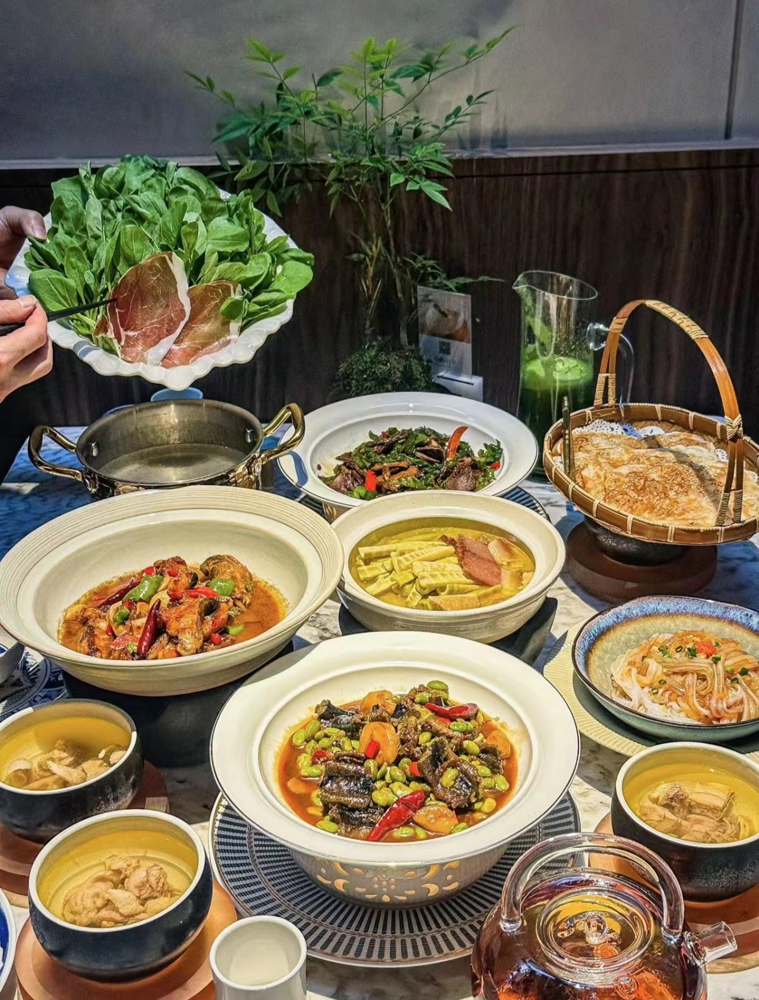
祁门臭鳜鱼
臭鳜鱼俗称“桶鱼”，是安徽祁门的一大名菜，大多数祁门人爱吃，而且外地人每当品尝以后，也都赞不绝口。
查看详情
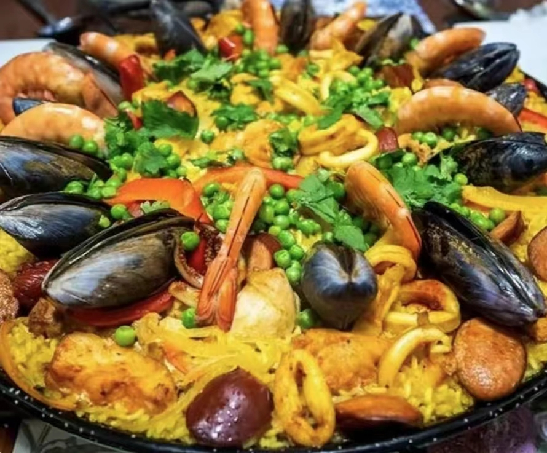
李鸿章大杂烩
李鸿章大杂烩是合肥名菜，此菜风靡全国，采用多种食材烹饪而成的，菜跟李鸿章有关，故名李鸿章大杂烩。
查看详情
花菇田鸡
徽州多山、多湖，盛产田鸡，以山涧石鸡为最佳。田鸡不仅肉质细鲜美，而 且富含蛋白质、钙。
查看详情
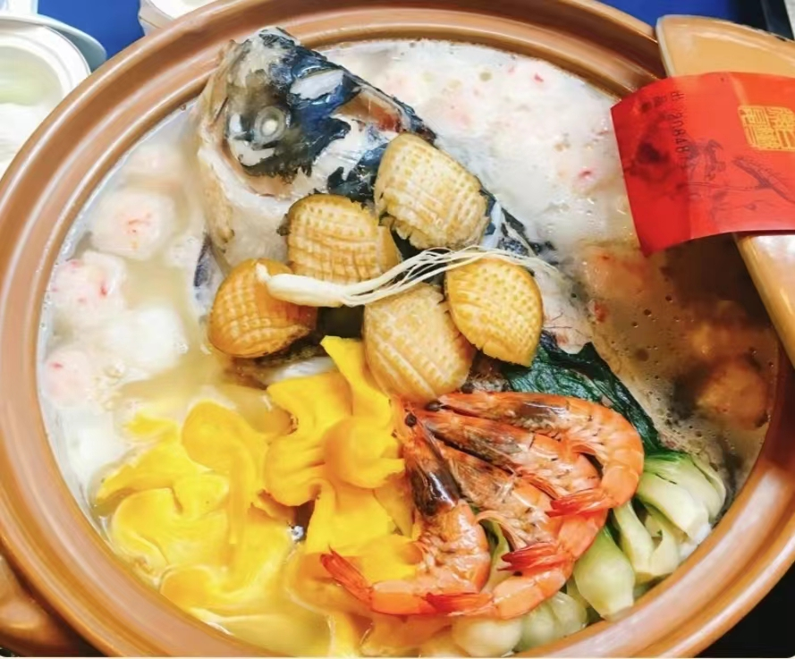
徽州一品锅
是绩溪名菜也是胡家待客的拿手菜。是徽菜中最具代表性的一道菜，据说是胡适当年招待客人时的压轴菜。
查看详情
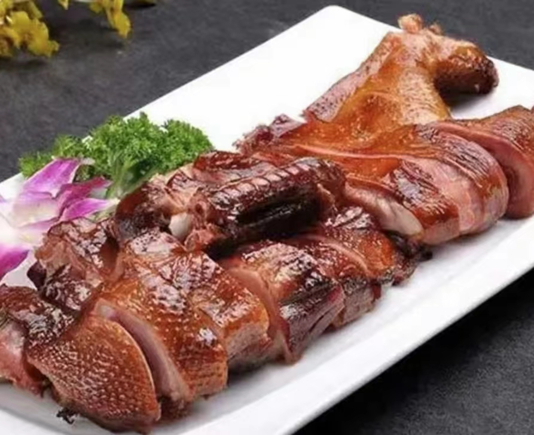
无为熏鸭
无为熏鸭，又称板鸭，早在清代道光年间就闻名于世，距今已近200年历史。
查看详情
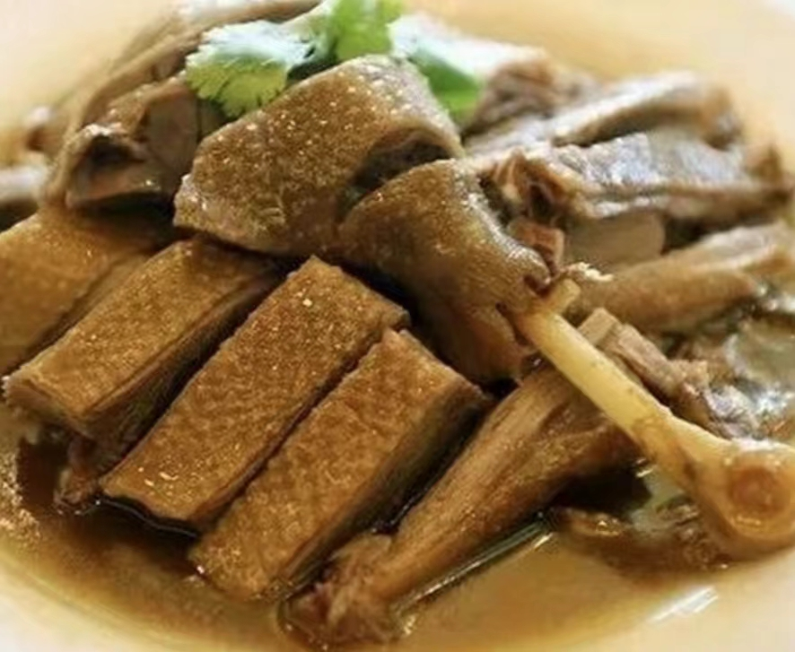
水口鹅煲
水口鹅煲是安徽省滁州市来安县水口镇的特色美食。水口鹅煲是以农家散养的2-3年年龄土鹅为主料而制成的。
查看详情
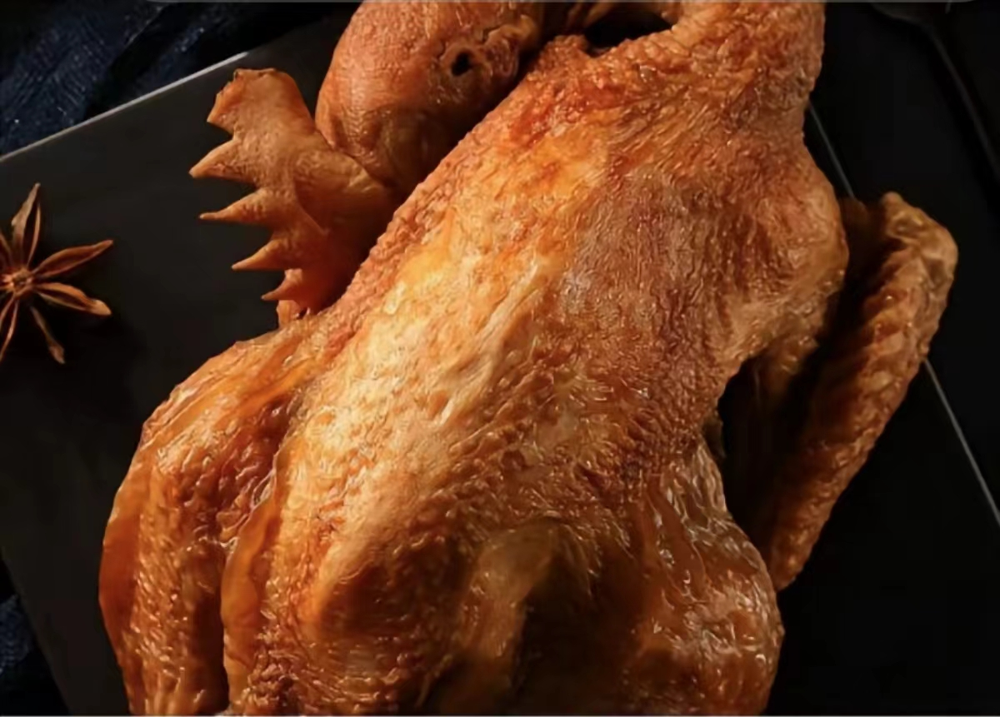
符离集烧鸡
泾县的宣纸有着“红色泾县，宣纸之乡”的美誉。其博物馆也是全国系统性综合宣纸博物馆。博物馆对保护和传习宣纸传统制作技艺，弘扬宣纸文化等有着重大的推动作用。
查看详情
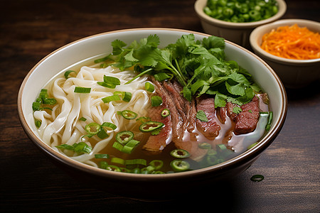
淮南牛肉汤
淮南牛肉汤是安徽省淮南市的一道特色小吃，属于徽菜系；该菜品是苏北豫鲁皖一带家喻户晓的名小吃。淮南牛肉汤具有鲜醇、清爽、浓香的特色。
查看详情
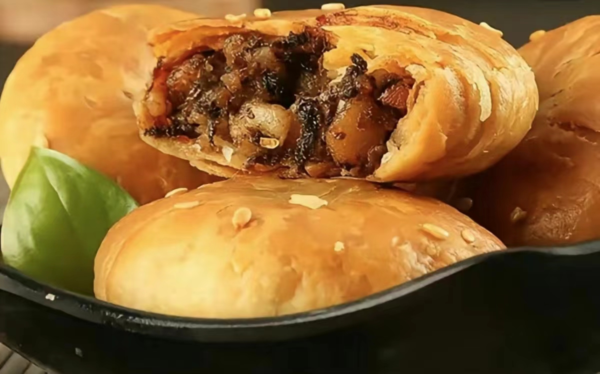
黄山烧饼
黄山烧饼又名皇印烧饼、救驾烧饼、蟹壳黄烧饼，是安徽省黄山市的一种特色传统小吃。刚出炉的黄山烧饼色泽金黄，吃起来酥脆爽口，油而不腻，令人回味无穷。
查看详情
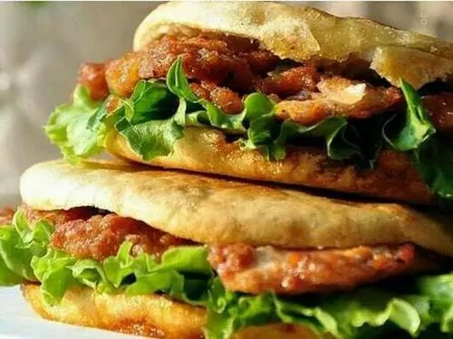
烧饼夹里脊
安徽蚌埠著名的传统小吃，初创于九十年代安徽省属蚌埠市。烧饼夹里脊就是由烧饼、里脊肉、酱料等组合而成的一种小吃。
查看详情
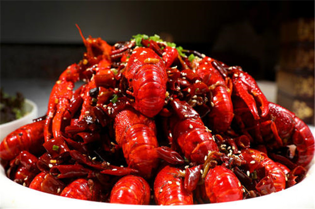
蚌埠小龙虾
源自安徽蚌埠，以其香辣可口、肉质紧实、口感爽滑而广受好评。其独特的烹调方式使每一只小龙虾都充满了诱人的味道和辣味，成为蚌埠的招牌美食。无论是烧烤、煮食还是油炸，都能展现其鲜美滋味，令人回味无穷。
查看详情
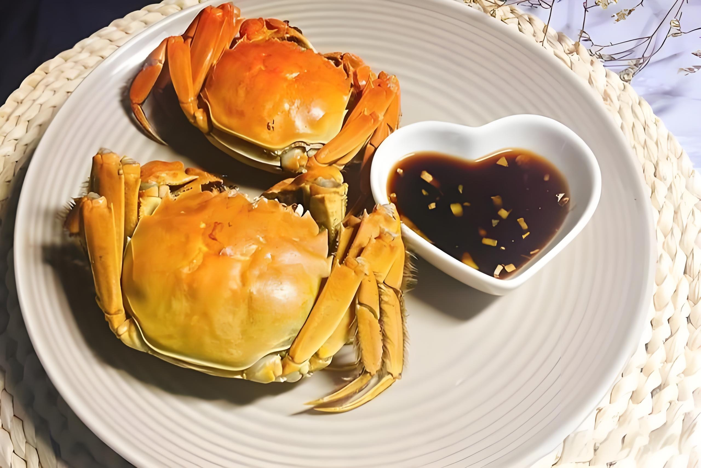
沱湖螃蟹
安徽省蚌埠市五河县特产，国家地理标志产品。沱湖螃蟹“青壳、白肚、金爪、褐螯”，体色纯正，体格健壮有力。成蟹壳肉盈实，膏脂丰腴。蟹肉微甜、味鲜，蟹壳簿而脆钙质含量高。其所含蛋白质、脂肪、碳水化合物和维生素A等营养成分尤为丰富。2009年12月28日，原国家质检总局正式批准“沱湖螃蟹”实施地理标志产品保护。
查看详情